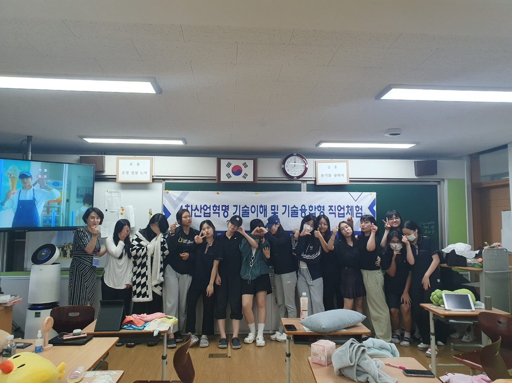
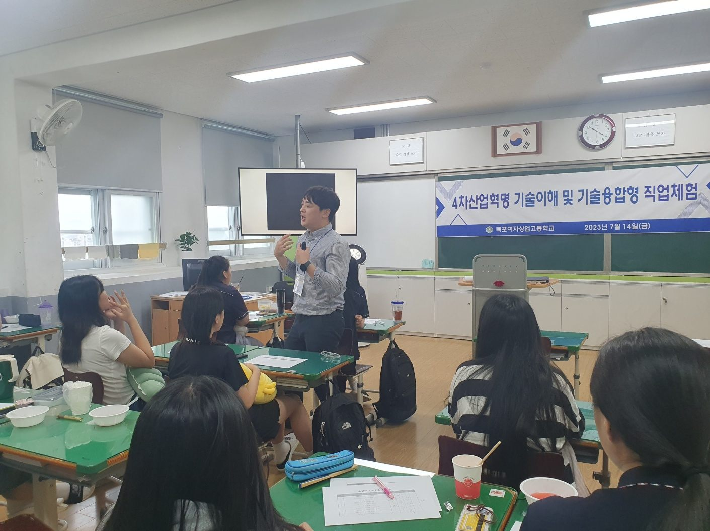
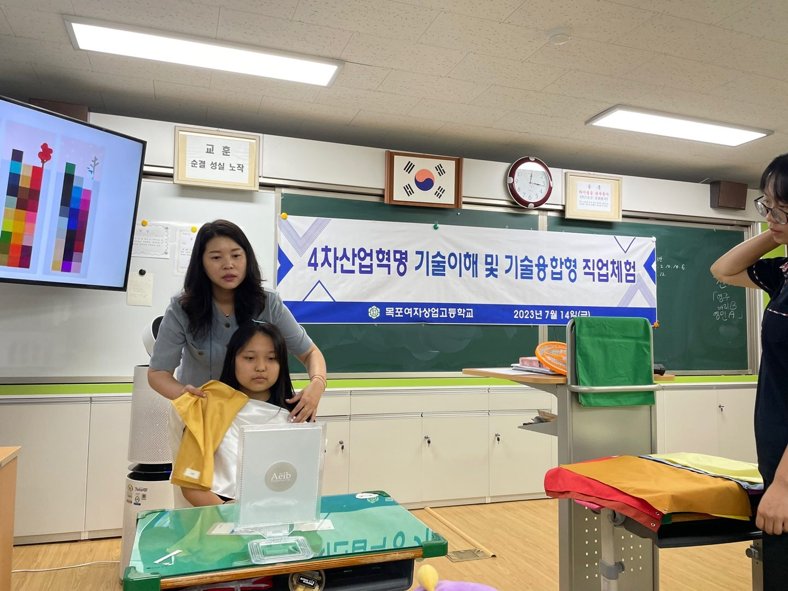
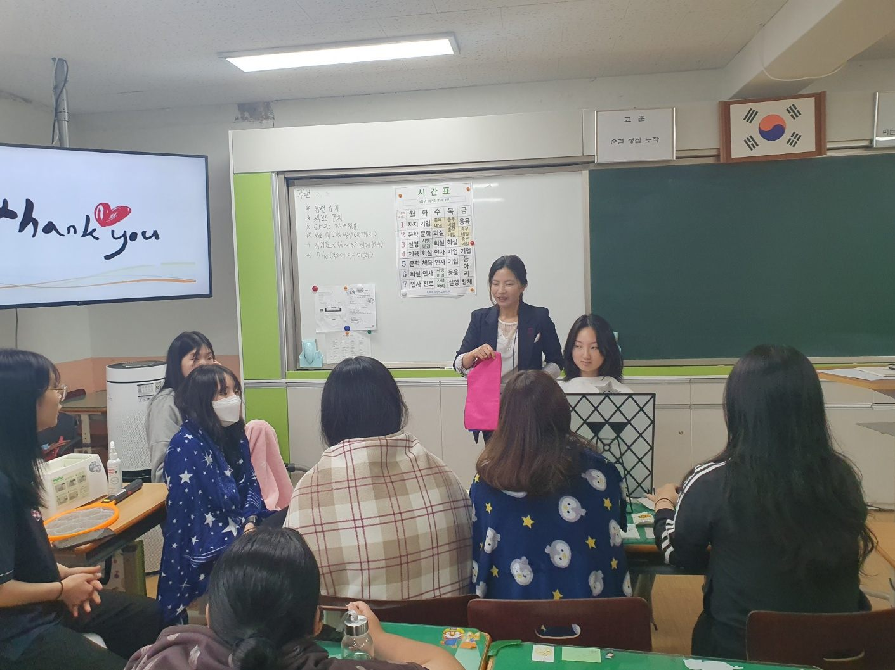
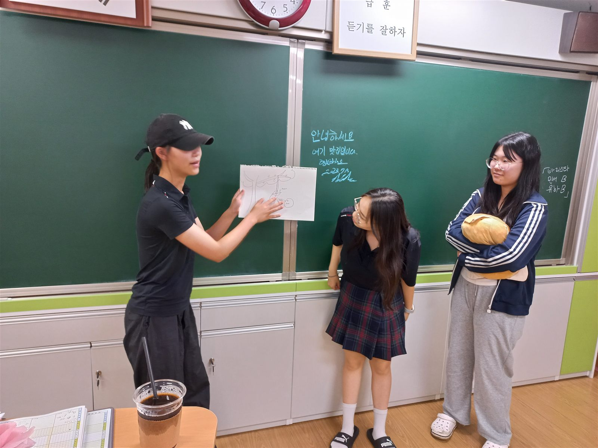

2023년 7월 14일(금), 목포여자상업고등학교 3학년 학생들과 「4차산업혁명 기술이해 및 기술융합형 직업체험」을 진행했습니다. 금융정보과, 회계정보과, 세무정보과, 보건경영과 3학년 8개 반을 강사진이 동시에 맡았습니다.

어떤 수업으로 구성했나요?
취업을 앞둔 3학년에게 꼭 필요한 두 가지, '나를 믿는 힘'과 '나를 보여 주는 힘'을 반마다 한 시간씩 나눠 진행했습니다.
- 자존감 수업: 나의 강점을 찾고, 스스로를 소개하는 연습
- 퍼스널 컬러와 이미지 메이킹: 컬러 천과 진단 도구로 나에게 어울리는 색을 찾고, 면접과 직장에서의 첫인상 만들기
퍼스널 컬러 수업은 어떻게 했나요?
학생이 한 명씩 앞에 앉아 여러 색의 천을 대 보며 얼굴빛이 어떻게 달라지는지 직접 확인했습니다. 친구들도 함께 보며 어울리는 색을 골라 주었습니다.


자존감 수업에서는 무엇을 했나요?
활동지에 나의 장점과 바라는 모습을 적고, 앞에 나와 친구들에게 직접 소개했습니다.

이미지 메이킹과 서비스 교육은 서비스 교육 안내에서, 학년과 반 수에 맞춘 진로 · 취업 과정은 취업진로컨설팅 안내에서 보실 수 있습니다. 2026년 목포여자상업고등학교 NCS 취업역량강화 과정도 진행하고 있습니다.